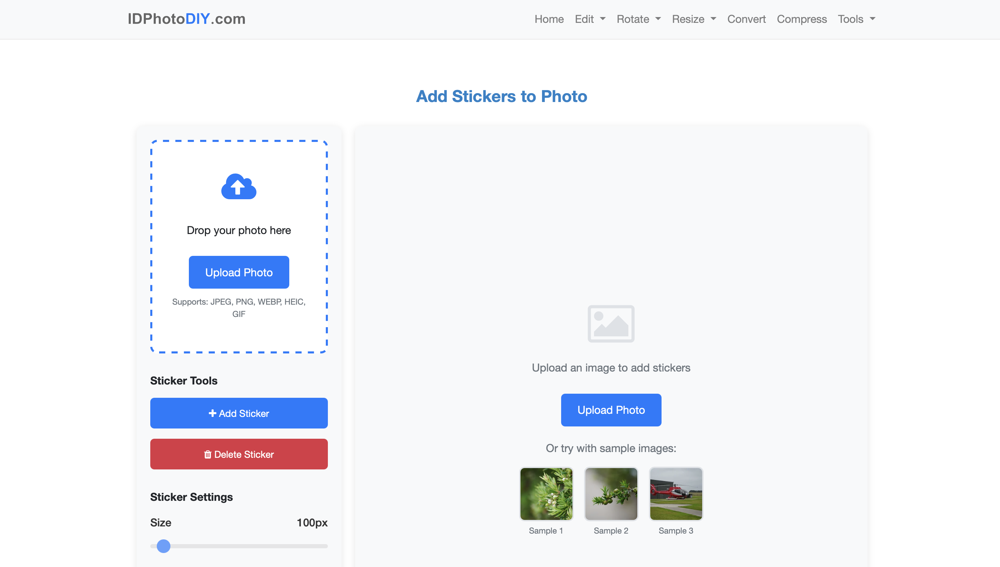
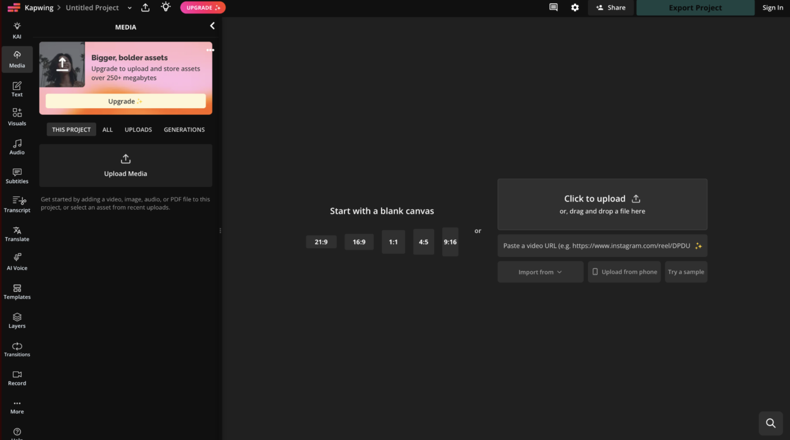
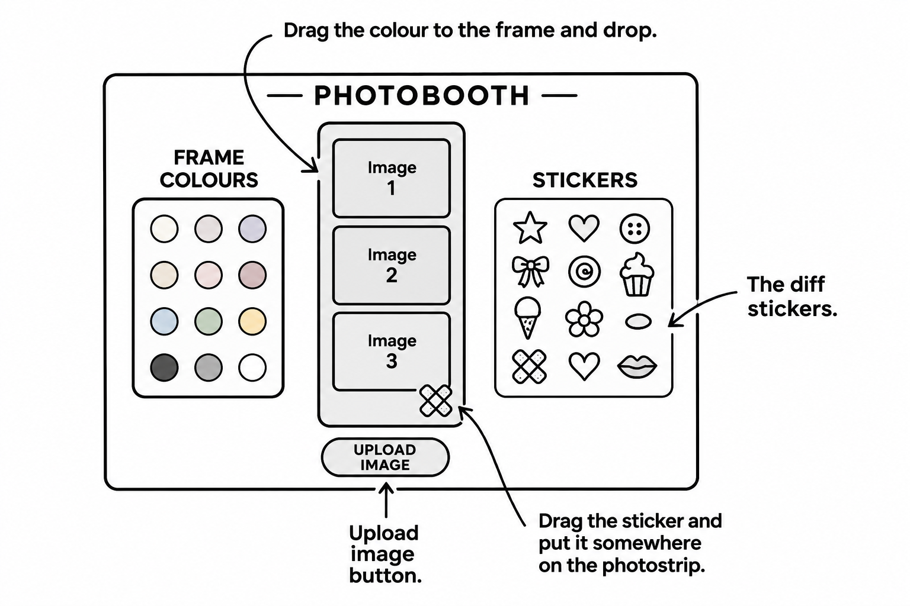
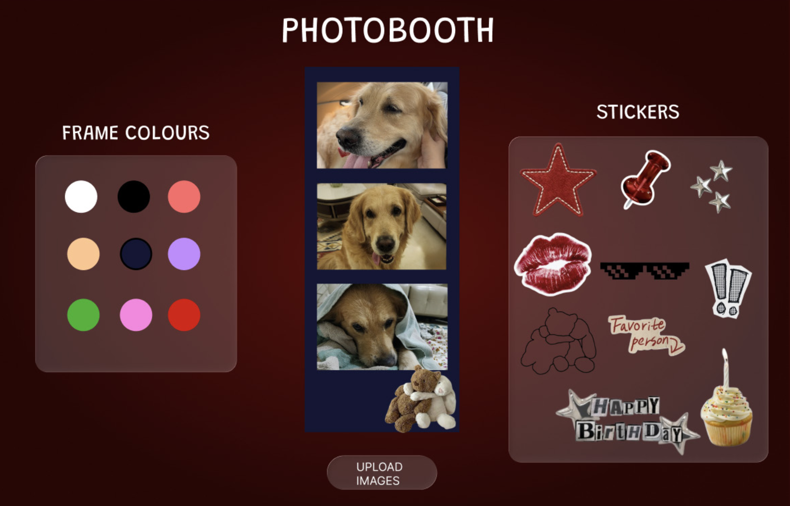

Interface Design and Development · 2026
A solar system that lets young children play music
Milky Way is a browser-based musical toy. Tap a planet to hear its note, tap the Sun to loop them all.
Overview
Music without reading or rules
My final instrument is built around the solar system. The Sun sits on the left as a big start and stop button, and eight planets are laid out across the screen. Tapping a planet plays its note, sends coloured ripples out from it and switches it on for the loop. Tapping the Sun starts a loop that plays every planet that is switched on, one after another, from Mercury to Neptune.
To change the pitch, tap the top or bottom of a planet. A panel along the bottom moves every planet up or down in five steps. All notes come from a pentatonic scale, so any combination a child makes sounds pleasant.
Design scenario
The brief
Design a way for young children with minimal language skills to explore music.
Browser-based instruments let people perform and explore complex audio design. That depth of control can be intimidating for adults, and more so for young children whose language skills are still developing.
Research
Where the ideas started
Before sketching, I looked at other playful, simple interfaces to see what makes them easy to pick up.



Process
From sketch to mockup
The layout started on paper, then moved into a higher-fidelity mockup before any code was written.


Approach
How the finished project answers the brief
Three short steps sit in a slim strip at the top, each with a number, an icon and one sentence. Pitch shows as a word and as a row of dots, so it can be seen as well as heard.
Every note comes from a pentatonic scale, so any combination of planets sounds pleasant.
Sound, ripples, glowing planets and twinkling stars respond straight away, which teaches cause and effect.
Planets and the Sun are large. Tapping a planet again switches it off, and the pitch dots have 44px touch areas.
Instruction and pitch panels are slim and see-through so the planets stay the focus. Nothing bounces or pulses before the child has touched anything.
The sky scales to any screen, the panels wrap on narrow screens, and animation is reduced for people who prefer less motion.
Core interactive features
Six behaviours, three files
The instrument is final-instrument.html for the SVG sky and panels, a stylesheet for look and animation, and a script for sound and behaviour. Pick a feature to see how it works.
Extended technique
Keeping sound and picture in step
Tapping the Sun starts and stops Tone.Transport. A Tone.Loop runs every eighth note and visits one planet per step, from Mercury to Neptune, playing it only if it is switched on.
The loop plays through a separate synth, so it can't clash with notes the child plays by hand.
Notes are scheduled at the time the loop provides, so the rhythm stays steady even if the page is busy.
Tone.Draw.schedule fires each ripple at the moment its sound plays, not a little earlier when the code runs.
const loop = new Tone.Loop((time) => {
const id = planetOrder[step % planetOrder.length];
if (activePlanets.has(id)) {
loopSynth.triggerAttackRelease(noteFor(id), "16n", time);
Tone.Draw.schedule(
() => ripplePlanet(document.getElementById(id)), time);
}
step++;
}, "8n");
Design system
Dark space, bright accents, one rounded font
Four things hold the look together: dark space, a few bright accents, one rounded font, and see-through panels that keep the planets in focus. The base palette is 1bit Monitor Glow by Polyducks, with a purple and a yellow accent added. Click a colour to copy it.
Planets, colours and notes
Each colour is also used for that planet's ripples and the stars that flash when it plays. The note is what it plays when the pitch is in the middle.
Typography
One font, Work Sans, with sizes that grow and shrink with the screen.
| Used for | Example | Style |
|---|---|---|
| Page title | Milky Way | Bold, 2 to 3.4rem |
| Step title | Tap the planets | Bold, 1 to 1.2rem |
| Step sentence | Touch a planet to hear its note. | Regular, dimmer white, 0.85 to 1rem |
| Pitch heading | Pitch: Middle | Bold, 1 to 1.3rem |
| Buttons | Higher | Semi-bold, 1.1rem |
Components and rules
SVG circle with a radial gradient for depth. Glows on hover, glows more when switched on.
One slim see-through bar with three steps: a yellow number, an icon, a title and one sentence.
The pitch word, Lower and Higher buttons, and a five-dot slider. The current step is the big white dot.
Steps on top, solar system in the middle, pitch along the bottom. The planets get the most room.
Rounded panels (18px) with a thin pale border. Simple line icons, no emoji.
Only ripples, twinkling stars and a gentle Sun pulse while the loop plays. Reduced when the device asks for less motion.
Pitch controls are real buttons with labels. Touch areas for the dots are 44px.
Dark box with a white border and a purple OK button. Warns the grown-up about the sound.
Timeline
From work index to finished instrument
Selected entries from the commit log.
-
Work index started
Swapped in my own details, favicon and GitHub.
-
Assignment 2 prototypes
Built the prototype pages, linked them together, added the peer testing form link and debugged.
-
Layout exploration 6 merged
The chosen layout direction joined the main branch.
- Home page started
-
Instructions added
Added instructions to make the user flow easier to understand, then commented the code.
-
System documentation and homepage edits
Wrote up the documentation and design system.
Reflection
What I take from this
✎ Add what went well, what you would change, and what you learned about designing for young children.